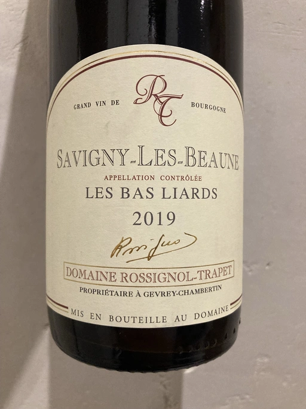
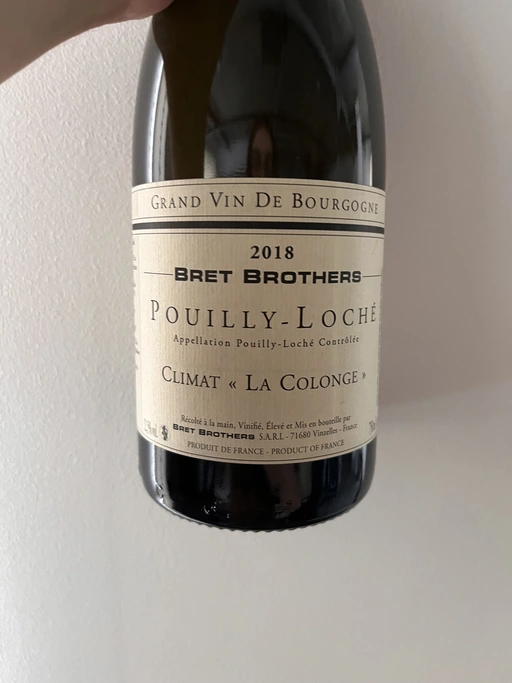
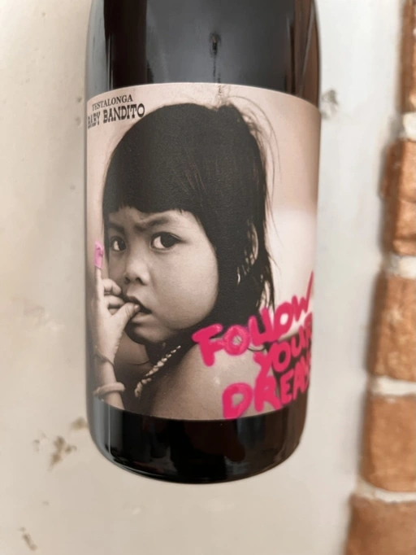
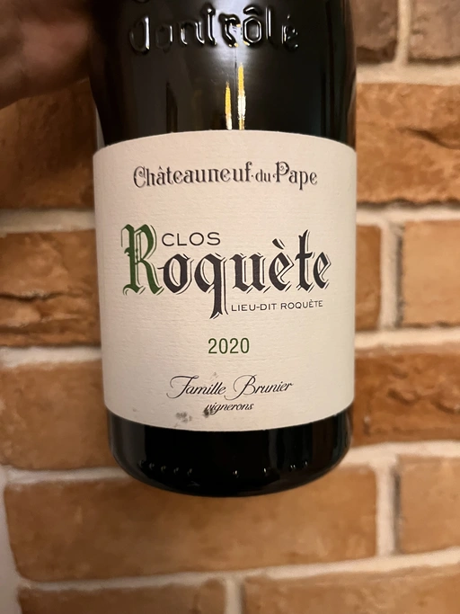
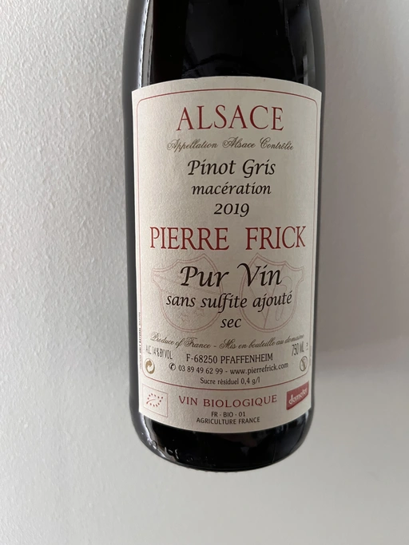

Opaque Tasting Vol. 1
We sometimes forget how important color and temperature are in assessing wines.
James Laube

A (professional) sensory analysis of wine breaks it down using eyes, nose, and mouth. We often focus more on the smell and the taste of a particular wine, not talking much about its visuals. Yet, the sight reveals a lot of information about wine: its grape varietal, the region it comes from, some of the winemaking aspects, and its age. Our brain perceives this information even if we don’t acknowledge it, or even if we don’t know its meaning. Aside from removing the last source of subjective judgement, what else would happen if we won’t be able to see the wine? And if both red and white wines are served at room temperature in opaque glasses, would we be able to guess at least the colour? I’ve heard, from various sources, that it’s not as easy as it seems. So let’s try!
Honestly, I feared that I would not be able to gather enough people for this format. On one hand, it’s more nerdy and wine-focused than our usual events. On the other hand, glasses are pricey and are hard to find. Yet, we have enough people to taste 4 wines. Unfortunately, every person has only one glass, so we taste them sequentially, but in ‘pairs’. Meaning, we taste the first two wines, vote, reveal, and then repeat with the second pair.
We start with a classical pair - a delicate Pinot Noir and oaked Chardonnay, both from Burgundy. Then we have a more slippery combination - light Cariñena from South Africa and white Châteauneuf du Pape. And as a bonus, for the brave mood, we have a jokingly tricky mix macerated Pinot Gris from Alsace (even the colour is deceiving).
- Domaine Rossignol-Trapet Savigny-Les-Beaune Les Bas Liards 2019
- Bret Brothers Pouilly-Loché Climat La Colonge 2018
- Testalonga Baby Bandito Follow Your Dreams 2021
- Le Vieux Télégraphe Châteauneuf du Pape Clos La Roquète 2020
- (bonus) Pierre Frick Pinoit Gris Macération Pur Vin 2019

Domaine Rossignol-Trapet Savigny-Les-Beaune Les Bas Liards 2019

- producer: Domaine Rossignol-Trapet
- name: Savigny-Les-Beaune Les Bas Liards
- vintage: 2019
- grapes: Pinot Noir
- appellation: Savigny-les-Beaune AOC
- location: Côte de Beaune, Côte d’Or, Burgundy, France
- alcohol: 13
- sugar: 0.1
- price: 976 UAH
A land of small vineyards owned by peasant farmers who eat in three-star restaurants, ride on luxury cars, do the dirty work on the vineyards and winery and sell the most expensive wines in the world. Burgundy is a complex and highly detailed region containing about a third of wine appellations in France. Land that qualifies for one of Burgundy’s better appellations is so valuable that it rarely passes out of the family. Often it becomes part of a complex inheritance system which requires all property to be shared equally among the children. As a result, the whole region is a carpet made of incredibly small scraps.
Domaine Rossignol-Trapet was established through the alliance of two families. The Rossignols were winemakers since the 16th century in Volnay. The Trapets - since the 18th century in Gevrey-Chambertin. Domaine owns 14 ha of old vineyards in the renowned villages of Beaune, Savigny-les-Beaune and Gevrey-Chambertin. Most of them are Pinot Noir, and only 0.7 ha are Chardonnay.
Nicolas and David Rossignol have been running the Domaine since the 1990s. They produce sophisticated, gorgeous and elegant wines. In my inexperienced taste, Domaine Rossignol-Trapet is among the best Pinot Noir producers you can find in Ukraine.
Les Bas Liards comes from 35-years old vines in Savigny-Les-Beaune, Côte de Beaune (southern part of famous Côte d’Or, or Golden Slope). Hand-picked, sorted and destemmed, it is fermented in barrels. Around 10% of oak is new.
I picked Les Bas Liards for this evening because its elegant, even feminine, palate might trick you considering our setting. In hopes to create a wow effect and to confuse you even further, I decided to place it before the oaked Chardonnay.
Bret Brothers Pouilly-Loché Climat La Colonge 2018

- producer: Bret Brothers
- name: Pouilly-Loché Climat La Colonge
- vintage: 2018
- grapes: Chardonnay
- appellation: Pouilly-Loché AOC
- location: Mâconnais, Burgundy, France
- alcohol: 12.5
- sugar: 0.7
- price: 1070 UAH
Côte d’Or often comes to mind when you talk about Burgundy. But let’s not forget that besides this golden mine, Burgundy has other wonderful regions to offer, including Chablis and Mâconnais. The latter is the home of Jean-Paul and Jean-Guillaume Bret. These brothers set up the project in 2001, intending to produce terroir wines from selected plots. Their formula is dead simple. Every wine is made of grapes from a single plot of 40+ years old vines from a single farmer. Yup, unlike their other project, La Soufrandière, they buy grapes for Bret Brothers wines.
Today they produce around 50,000 bottles in 14 different cuvées, around 8 ha. It includes grapes sourced from Beaujolais (Brouilly, Lantignié, Chénas and Juliénas). This expansion happened in 2013.
Climat La Colonge comes from a 0.35 ha plot of 35 years old vines from the Pouilly-Loché appellation (the smallest of Mâconnais). Though the real age of the vines is unclear because, unlike the website, the label talks about 45 years. Anyway, vines grow at 200 meters elevation on clay and limestone soils. 100% vinified and aged in oak barrels (228 litres each) for 11 months. 100% malolactic fermented. 2627 bottles produced.
And what can be more confusing than an oaked and MLF-ed Chardonnay served at room temperature in a black glass?
Testalonga Baby Bandito Follow Your Dreams 2021

- producer: Testalonga
- name: Baby Bandito Follow Your Dreams
- vintage: 2021
- grapes: Cariñena
- appellation: WO Swartland
- location: South Africa
- alcohol: 12
- sugar: N/A
- price: 640 UAH
Here comes the tricky part, an experiment of mine. Follow Your Dreams is a very light expression of Cariñena from Swartland, South Africa. It has plenty of red fruits in it, yet I hope the white Châteauneuf du Pape would outweigh Testalonga’s creation.
We already had some wines by Testalonga as part of Barberry Garden events, so you can read more about them on a separate page. Yet, few words about the wine of the evening. Planted in 2001, bush vine, farmed organically. Bunch fermented. The fruit is crushed before going into the tank for 12 days of fermentation and then pressed off into two old 3500L foudre and 500L barrels. A light clarifying filtration, no fining.
Le Vieux Télégraphe Châteauneuf du Pape Clos La Roquète 2020

- producer: Le Vieux Télégraphe
- name: Châteauneuf du Pape Clos La Roquète
- vintage: 2020
- grapes: Garnacha Blanca, Clairette, Roussanne
- appellation: Châteauneuf-du-Pape AOC
- location: Rhône, France
- alcohol: 13.5
- sugar: 1.8
- price: 1282 UAH
A combination of reputation, story, somewhat limited supply and some techniques make good Châteauneuf du Pape a subject of talks and less a wine to drink occasionally. Madeline Puckette calls it “the gateway drug to French wine”. And yet I never tasted a Châteauneuf du Pape. The idea to pick a bottle of white wine from this region came from Elizabeth Schneider on one of the “Wine for normal people” podcasts. According to Elizabeth, it’s hard to identify the colour of a bold white from the Rhône in a blind tasting. It was a red blanket, and I ate the bait.
Châteauneuf du Pape’s name comes from a period in Catholic history when Pope John XXII moved from Rome to Avignon. The castle was built in the 14th century. Of course, the wine comes together with Christians.
The region is located in the Southern Rhône. It is famous for red wines, primarily made of Grenache. The whites are more limited and harder to find because only about 7% of all vineyards are dedicated to white grapes. We talk about Grenache Blanc, Clairette, and Roussanne.
Domaine du Vieux Télégraphe is a family-owned estate since 1898. La Roquète was a separate winery purchased by Daniel and Frédéric Brunier around 1986. A year later, they replanted the small 3 ha Clos La Roquète (part of 29 ha owned by La Roquète) with white grapes. Grapes are sustainably farmed and harvested by hand. They are gently pressed by pneumatic press, 25% of grapes fermented in cuve, 75% in barriques and demi-muids. Wine ages in cuve and in barrel for 8-10 months before bottling.
Pierre Frick Pinoit Gris Macération Pur Vin 2019

- producer: Pierre Frick
- name: Pinoit Gris Macération Pur Vin
- vintage: 2019
- grapes: Pinot Gris
- appellation: Alsace AOC
- location: France
- alcohol: 14
- sugar: N/A
- price: 898 UAH
And now the bottle of orange wine. I know many expected me to pick one for this event. And I couldn’t resist. Yet I decided to make things a little bit more complicated - macerated Pinot Gris. Yes, we don’t see the colour, but it offers some red fruits on the nose. Maybe it doesn’t prove my original point of opaque tasting, yet it should be fun.
Scores
| Wine #1 | Wine #2 | Wine #3 | Wine #4 | Wine #5 | |
|---|---|---|---|---|---|
| Oleksandr | 4.00 | 3.20 | 3.80 | 4.20 | 4.10 |
| Andrii | 3.50 | 3.90 | 4.00 | 4.20 | 4.00 |
| Lena | 4.20 | 3.80 | 4.00 | 4.00 | - |
| Kateryna | 4.00 | 3.50 | - | - | - |
| Viktoriya | 4.00 | 4.10 | 3.80 | 4.20 | 3.90 |
| Mariia | 3.90 | 3.60 | 3.80 | 4.40 | 3.90 |
| Julia | 3.70 | 4.10 | 3.90 | 3.90 | - |
| Elvira | 4.00 | 3.80 | 4.00 | 4.20 | 3.90 |
| Boris | 4.00 | 3.90 | 3.80 | 3.90 | 3.70 |
| amean | sdev | favourite | price | QPR | |
|---|---|---|---|---|---|
| Wine #1 | 3.92 | 0.0373 | 3.00 | 976.00 | 2.1887 |
| Wine #2 | 3.77 | 0.0756 | 3.00 | 1070.00 | 1.5881 |
| Wine #3 | 3.89 | 0.0086 | 0.00 | 640.00 | 3.1700 |
| Wine #4 | 4.12 | 0.0269 | 3.00 | 1282.00 | 2.2638 |
| Wine #5 | 3.92 | 0.0147 | 0.00 | 898.00 | 2.3592 |
How to read this table:
ameanis arithmetic mean (and not ‘amen’), calculated as sum of all scores divided by count of scores for particular wine. It is more useful thantotal, because on some events some wines are not tasted by all participants.sdevis standard deviation. The bigger this value the more controversial the wine is, meaning that people have different opinions on this one.favouriteis amount of people who marked this wine as favourite of the event.outcastis amount of people who marked this wine as outcast of the event.priceis wine price in UAH.QPRis quality price ratio, calculated in as100 * factorial(rms)/price. The reason behind this totally unprofessional formula is simple. At some point you have to pay more and more to get a little fraction of satisfaction. Factorial used in this formula rewards scores close to the upper bound 120 times more than scores close to the lower bound.
Afterword
We all understand how much we rely on visuals and temperature while assessing wines. But that’s in theory. Tasting from opaque glasses is just another level. By far, this is one of the most emotional events we had. The struggle was real, as they say.
Everyone guessed the colours in the first pair. It was not that simple, but after some time, everyone managed. I think the white lacked ageing on lees and more new oak, so it wasn’t as confusing as I anticipated.
On the other hand, the second pair most of the people. The light Cariñena caused some insecurity. Only two people guessed the colour. Everyone else’s bet was on macerated white. But the real fun started when I poured the heavy Châteauneuf du Pape Blanc. Yes, five people guessed its colour, but the confusion was high. I mean, initially, many of us expected it to be red. So I would say that the second pair hit the right spot.
I opened one bonus bottle because of some adventurous people. My choice almost made one person cry. Aye, it was not polite at all. It’s incredibly hard to identify Macerated Pinot Gris, especially if that’s your first one like this. It has tannin. Its bouquet has traces of red wine. Believe me or not, only one person thought that it was orange. Everyone else decided it was red.
I have multiple takeaways from this event.
The format is incredible. Do try it! Yet you have to spend extra time looking for matching pairs. The goal is to find more or less recognisable wines. Wine tasting is intellectual work. And tasting from completely black glassware might push some to the limit. It might be tiring and not fun at all. Knowing more might only confuse you. That’s where the practice of blind tasting is needed. This is not for everyone. That’s totally fine if you find it nerdy and boring. I have sophisticated convives. To rate a delicate Burgundian Pinot Noir so high in a blind tasting? Wow, that’s something, I must say.
Safe travels, my friends. Remember to enjoy every wine you taste.
P.S. Take a look at the favourites of the evening. Three wines are sharing first place. That’s the first time in the history of Barberry Garden.
Resources
- Test Your Tasting Talent With Black Wine Glasses | Wine Spectator
- Black Glass Wine Tasting | Westlake Village Inn
- Burgundy | JancisRobinson.com
- Bret Brothers, prestige winery - Bret Brothers & La Soufrandière
- Our story - Bret Brothers & La Soufrandière
- Pouilly-Loché Climate « La Colonge » Bret Brothers
- Wine for Normal People: Ep 423: Interesting things about the Rhône Valley that you won’t read in books
- Guide to Châteauneuf-du-Pape Region and The Wines | Wine Folly
- Domaine la Roquète | Our Wines | Kermit Lynch Wine Merchant